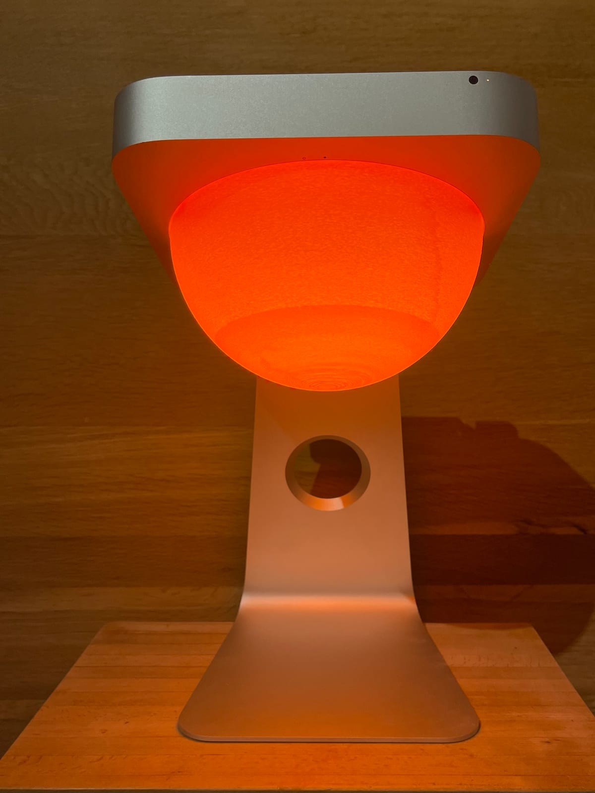
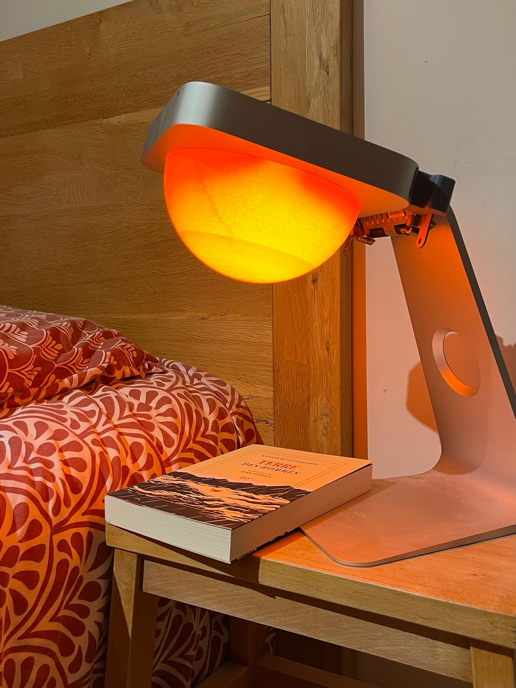
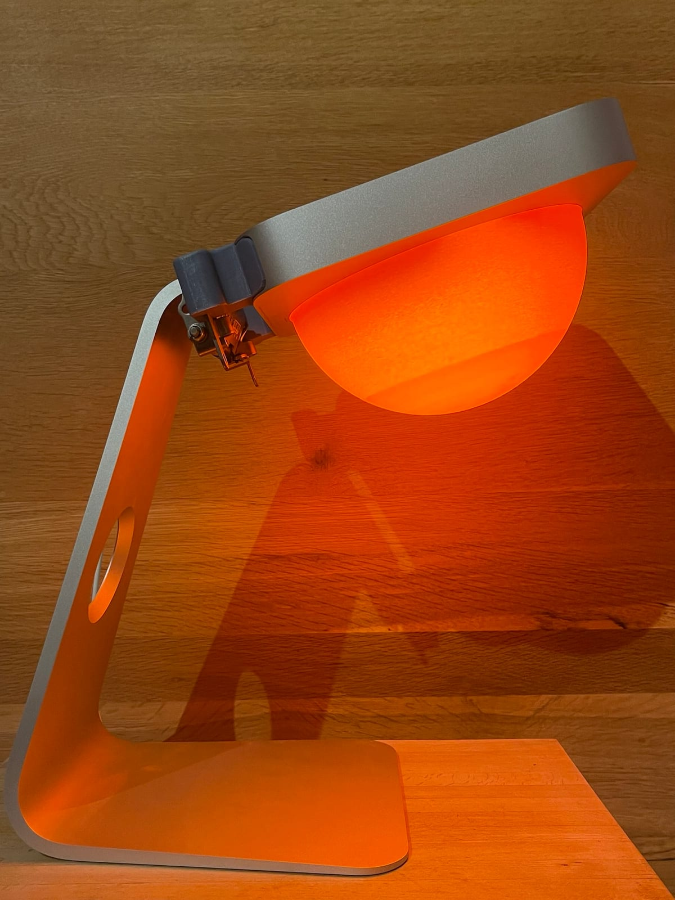
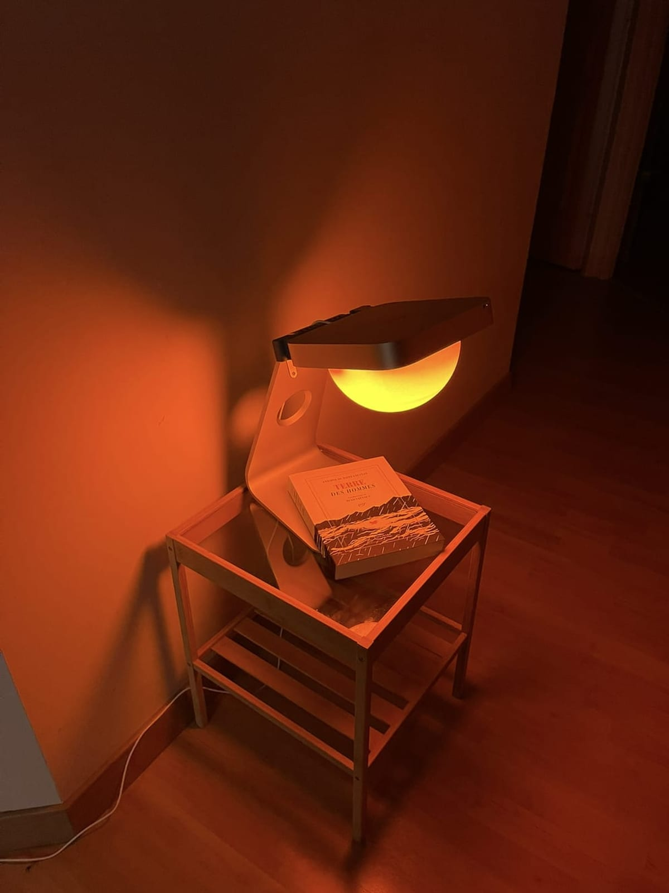

Lampe de chevet
Une lampe faite d'un pied d'iMac et d'un Mac mini




par Alva · pièce unique
01 / 06
Une lampe faite d'un pied d'iMac et d'un Mac mini




par Alva · pièce unique
Vide-poches, bougeoirs et cache-pots moulés en silicone
par Alva · en cours
La première lampe dessinée sans objet de départ
par Alva · en recherche
Fines couches cintrées, strates visibles sur la tranche
par Alva · en recherche
Une géométrie stricte posée sur du béton
par Alva · esquisse
L'assise, quand le bois n'aura plus de secret
par Alva · plus tard